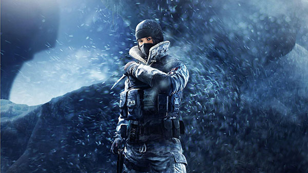
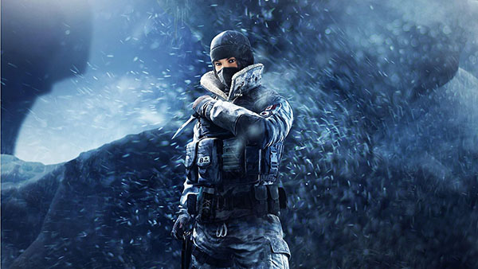

Div 3


Tom Clancy's Rainbow Six Siege is an online tactical shooter video game developed by Ubisoft Montreal and published by Ubisoft. It was released worldwide for Microsoft Windows, PlayStation 4, and Xbox One on December 1, 2015; the game is also set to be released for PlayStation 5 and Xbox Series X in 2020. The game puts heavy emphasis on environmental destruction and cooperation between players. Each player assumes control of an attacker or a defender in different gameplay modes such as rescuing a hostage, defusing a bomb, and taking control of an objective within a room. The title has no campaign but features a series of short, offline missions called, "situations" that can be played solo. These missions have a loose narrative, focusing on recruits going through training to prepare them for future encounters with the "White Masks", a terrorist group that threatens the safety of the world.
Siege is an entry in the Rainbow Six series and the successor to Tom Clancy's Rainbow 6: Patriots, a tactical shooter that had a larger focus on narrative. After Patriots was eventually cancelled due to its technical shortcomings, Ubisoft decided to reboot the franchise. The team evaluated the core of the Rainbow Six franchise and believed that letting players impersonate the top counter-terrorist operatives around the world suited the game most. To create authentic siege situations, the team consulted actual counter-terrorism units and looked at real-life examples of sieges such as the Iranian Embassy siege. Powered by AnvilNext 2.0, the game also utilizes Ubisoft's RealBlast technology to create destructible environments.
Announced at Electronic Entertainment Expo 2014, it received four nominations from Game Critics Awards including Best of Show. The game received an overall positive reception from critics, with praise mostly directed to the game's tense multiplayer and focus on tactics. However, the game was criticized for its progression system and its lack of content. Initial sales were weak, but the game's player base increased significantly as Ubisoft adopted a "games as a service" model for the game and subsequently released several packages of free downloadable content. Several years after the game's release, some critics regarded Siege as one of the best multiplayer games in the modern market due to the improvements brought by the post-launch updates. The company partnered with ESL to make Siege an esports game. In February 2019, the game surpassed 45 million registered players across all platforms.[1]

Tom Clancy's Rainbow Six Siege is a first-person shooter game, in which players utilize many different operators from the Rainbow team. Different operators have different nationalities, weapons, and gadgets.[2] The game features an asymmetrical structure whereby the teams are not always balanced in their choices of abilities.[3] The base Counter-Terrorism Units (CTUs) available for play are the American Hostage Rescue Team (referred to in-game as the FBI SWAT), the British SAS, the German GSG-9, the Russian Spetsnaz and the French GIGN, each of which has four operators per unit split between attackers and defenders (other units were later added through downloadable content, see below). Players also have access to a "Recruit" operator who can choose from a more flexible assortment of equipment at the expense of having a unique gadget or the ability to customize their weapon. Players can pick any operator from any unit that is defending or attacking before a round starts, choosing spawn points as well as attachments on their guns but are not allowed to change their choices once the round has started. An in-game shop allows players to purchase operators or cosmetics using the in-game currency, "Renown", which is earned at the end of matches from actions performed in-game. Different gameplay modes award renown at different rates, with ranked matches offering the largest renown multiplier potential per match. Players can also complete in-game "challenges" to get a small amount of renown. Renown gain rate can also be affected by the using in-game "boosters" which gives the player a 100% increase in all renown earned for various duration, starting with 24 hours. A premium currency known as "R6 credits" can also be purchased using real-world currency to get operators quicker in-game, or other cosmetic.[4]

When the round begins in an online match, the attackers choose one of several spawn points from which to launch their attack while defenders do the same from which to defend from. A one-minute preparatory period will then commence wherein the attackers are then given control over mecanum-wheeled drones to scout the map in search of enemy operators, traps and defensive set-ups in addition to the target objective(s),[5] while the opposition establishes their defences and tries to do so without having the defensive and target objective(s) details being discovered, chiefly through destroying the drones.[6] Maps in the game are designed to encourage close quarters combat, and players cannot respawn until the end of a round. Players who were killed by opponents can enter "Support Mode", which allows them to gain access to drone's cameras and security cameras so that they can continue to contribute to their team by informing them of opponent locations and activities.[7][8] Matches last only four minutes for a casual and three minutes for a ranked.[9] Teamwork and cooperation are encouraged in Siege, and players need to take advantage of their different abilities in order to complete the objective and defeat the enemy team.[5] Communication between players is also heavily encouraged.[5][10] The game also has a spectator mode, which allows players to observe a match from different angles.[11]

The game features a heavy emphasis on environmental destruction[12][13] using a procedural destruction system. Players can break structures by planting explosives on them, or shoot walls to make bullet holes.[14] Players may gain tactical advantages through environmental destruction, and the system aims at encouraging players to utilize creativity and strategy.[14][15] A bullet-penetration system is featured, in which bullets that pass through structures deal less damage to enemies.[13] In addition to destruction, players on the defending team can also set up a limited number of heavy-duty fortifications on walls and deployable shields around them for protection; these can be destroyed through breaching devices, explosives, or by utilizing operator specific gadgets in the case of the former.[16] In order to stop attackers' advance, defenders can place traps like barbed-wire and explosive laser wire traps around the maps.[17] Vertical space is a key gameplay element in the game's maps: players can destroy ceilings and floors using breach charges and can ambush enemies by rappelling through windows.[5] Powerful weapons like grenades and breach charges are valuable, as only a limited amount can be used in a round.[9]
| Operators | Gadgets |
|---|---|
| Ash | Breaching Round |
| Sledge | Sledgehammer |
| Twitch | Shock drone |
| Rook | Armor pack |
Three years after the Rainbow Program's deactivation, there is a resurgence of terrorist activities, with the White Mask being the most prominent. The terrorists' goals are unknown, yet they are causing chaos across the world.[30] To counter this rising threat, the program is reactivated by a new leader who is simply known as Six (voiced by Angela Bassett).[31] Six assembles a group of special forces operatives from different countries to face and combat the White Masks. Recruits go through multiple exercises to prepare them for future encounters with the White Masks, training to perform hostage rescue and bomb disposal. Eventually, the White Masks launch a chemical attack on a university (called Bartlett University), and the recruits are sent to disarm the bombs and eliminate the enemy presence. The operation is a massive success, though there are casualties. The story ends with Six affirming that the reactivation of Team Rainbow is the best and only choice in a time filled with risks and uncertainties. Team Rainbow is ready for their next mission – to hunt down the leader of their enemy – and they stand prepared to protect and defend their nation from terrorists.
The game's predecessor was Tom Clancy's Rainbow 6: Patriots, a tactical shooter announced in 2011. It had a focus on narrative, and the story campaign features many cut-scenes and scripted events. However, the game fell into a development hell shortly after its announcement. The game's outdated engine and frequent change of leadership hindered development progress, and game quality was not up to par.[33] In addition, it was planned to be released on seventh-generation video-game consoles which were not capable of processing certain game mechanics. Seeing the arrival of a new generation of consoles, the team wanted to make use of this opportunity to create a more technologically advanced game.[34] As a result, Ubisoft decided to cancel Patriots and assembled a new team of 25 people to come up with ideas to reboot the series.
To make the new game feel refreshing, only certain multiplayer elements were retained as the small team took the game in a different direction. They evaluated the core of the Rainbow Six series, which they thought was about being a member of a counter-terrorist team travelling around the globe to deal with dangerous terrorist attacks – operations which are usually intense confrontations between attackers and defenders.[32] However, the team wanted to fit these ideas into a multiplayer format which would increase the game's sustainability.[36][37] These became the basic concept ideas for the game. As the development team hoped that the game can be replayed frequently, the team decided to devote all the resources into developing the game's multiplayer and abandoned the single-player campaign
Development of the game officially began in January 2013. Ubisoft Montreal, the developer of Patriots, handled the game's development, with Ubisoft's offices in Barcelona, Toronto, Kiev, Shanghai and Chengdu providing assistance.[39][40] The game was originally called Rainbow Six Unbreakable, a title that reflected not only the game's destruction mechanic but also the mindset of the development team, who had to deliver a game that was once stuck in development hell.[36] According to Alexandre Remy, the brand director, the team was confident in their new vision for the game but very nervous when they revealed it, realizing the change of direction would likely disappoint some fans.

Ubisoft announced the game at their press conference during Electronic Entertainment Expo 2014.[56] In August 2015, Ubisoft announced that they had delayed the game's release from October 10 to December 1, 2015, in order to give additional time for the team to balance the game for cooperative multiplayer play.[57] A closed alpha-testing was held by Ubisoft on April 7–13, 2015, in which players could play an early version of the game in order to help the development team test their servers and core gameplay loops, and to provide feedback.[58] Ubisoft held a closed beta, starting on September 24, 2015, for further testing. The company originally wanted to hold another round of testing with the release of the game's open beta on November 25, 2015, but they delayed its release to November 26 due to matchmaking issues.[59] Players who purchased Siege for the Xbox One could download Tom Clancy's Rainbow Six: Vegas and its sequel, Tom Clancy's Rainbow Six: Vegas 2 for free.[60] To launch the game in Asian markets, Ubisoft announced plans to remove graphic imagery from all versions of the game via a patch.[61] The plan was later withdrawn by the developer due to review bombing and negative fans feedback.[62]

 
